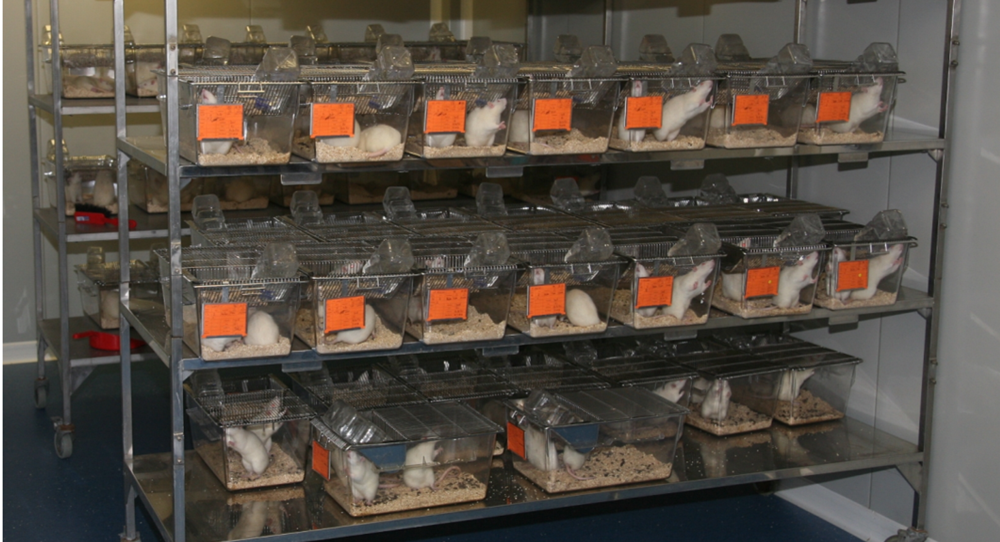

When I started my PhD in 2010, the controversy on GM crops was raging. I participated in the analysis and publication of the results of the first long-term toxicity study of a Roundup herbicide and a Roundup-tolerant GM maize.

Long-term toxicity of a Roundup herbicide and a Roundup-tolerant GM maize
The contamination of foodstuffs by glyphosate residues has been linked to its use on crops tolerant to agricultural applications of Roundup herbicides. When I started my PhD in 2010, no long-term studies were available to understand whether the residues from glyphosate spray on GM plants posed health risks. The research group initiated the first study of the long-term toxicity of Roundup in Roundup-tolerant GM maize.
The first manuscript was published in September 2012 in Food and Chemical Toxicology (Séralini et al, 2012). The study was exploratory and not designed to conclude with certainty on long-term effects. The paper caused significant media coverage due to graphic images of rats with tumors, heavily criticised by the scientific community. One year after publication, the editor-in-chief requested the raw data, leading to retraction because "the results presented (while not incorrect) are inconclusive."
The debate continues, as lawsuits have uncovered evidence that Monsanto engaged a network of scientists to discredit the study. The Séralini affair is a well-documented case of fundamental challenges faced by science in a world increasingly dominated by corporate influence.

Integrating multi-omics analysis to study herbicide-tolerant crops
I was hired by the group of Dr Michael Antoniou at King's College London to evaluate whether molecular profiles (proteomics, transcriptomics, and metabolomics) of liver and kidneys from animals in the Séralini study could reveal insights into the toxicity of Roundup and the GM crop.
Molecular profiles from liver and kidneys of animals fed GM crops indicated no adverse effects related to feeding NK603 maize cultivated with or without Roundup (Mesnage et al., 2017c). However, liver molecular profiles suggested the development of non-alcoholic fatty liver disease in animals exposed to Roundup in their drinking water (Mesnage et al., 2015).
The available scientific evidence indicates that the potential adverse health effects arising from GM crops are not different from those created by conventional breeding practices. Future health risk evaluations would benefit from the use of high-throughput omics technologies.
View related publications